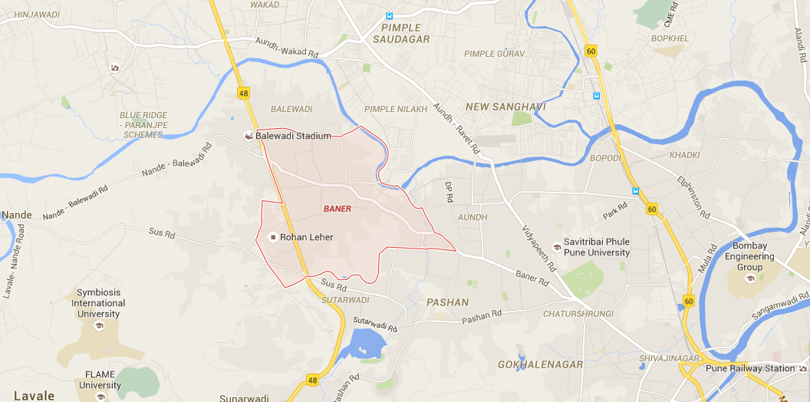
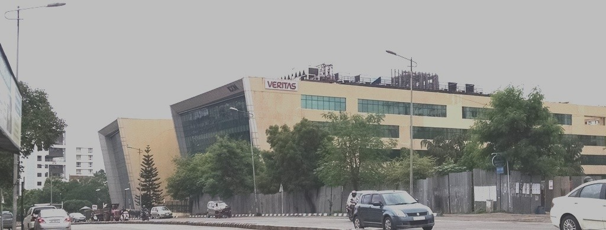
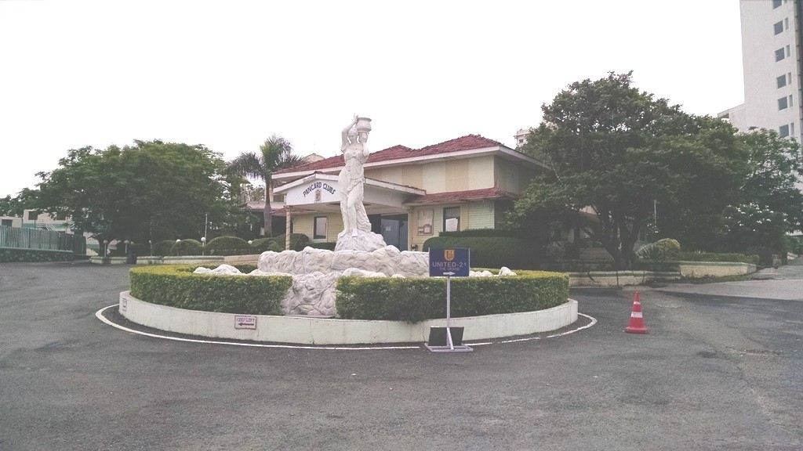
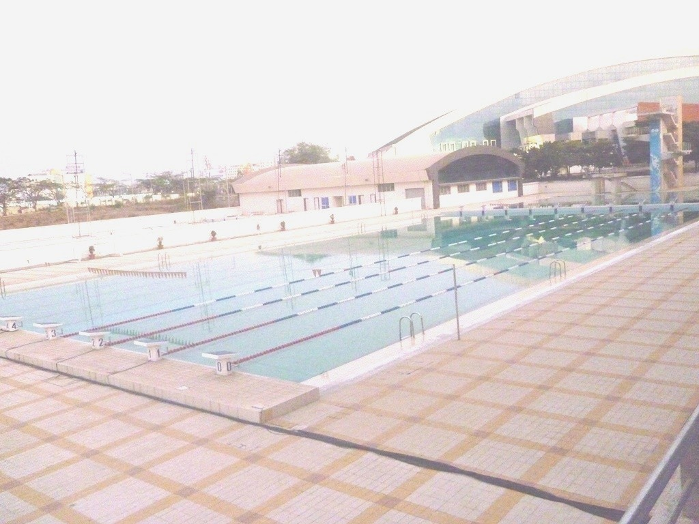
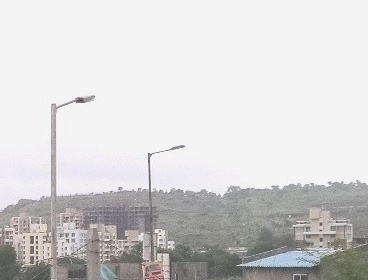

Great Living Engineered
Baner, Pune – A residential hotspot of Pune
If you are considering living in western Pune, Baner is probably among the first localities to come to mind and with good reason. Baner has plenty to offer, whether you are a techie, an executive, an investor or even a Non-Resident Indian (NRIs).
Let’s rewind the clock back a decade and all this would have been unimaginable. Baner, then, was a small village, lacking basic amenities, located amidst green hills near Mumbai-Bangalore highway NH4. Today, Baner is dotted with residential complexes and commercial establishments of all shapes and sizes, with more coming up every other day. The rapid rise of this locality is truly mind-boggling. In this article, we examine why and how this transformation has taken place.
Proximity to IT and industrial hubs
The biggest driver of Baner’s development was the rise of nearby Hinjewadi as one of India’s leading Information Technology (IT) hubs, housing big companies such as TCS, Accenture, Cognizant, Infosys and Wipro. This led to a huge demand for housing in the nearby established areas of Aundh, Kothrud and Pashan. However, with skyrocketing property prices and saturation in housing within these old and established areas, Baner, with its low land prices, vast land availability and convenient location near Hinjewadi, emerged as an attractive option for all.

Located in close proximity to the IT hubs of Hinjewadi (8 km), Senapati Bapat Road (8.5 km) and Aundh (5 km), Baner attracts techies in large numbers. In fact, many reputed tech companies have established their centers in Baner itself, providing a further fillip to the housing demand here. Baner also attracts those working in the nearby industrial and manufacturing hubs of Pirangut, Talegaon and PCMC, housing major companies such as Tata Motors, Atlas Copco, Greaves Cotton and Forbes Marshall.

Image: A commercial complex in Baner
Infrastructure and Road Connectivity
For a place to truly emerge as a preferred residential destination, having suitable supporting infrastructure is a must. This brings us to the second driver of Baner’s growth, the Commonwealth Youth Games, held in neighbouring Balewadi in 2008, which led to the construction of hotels and good quality roads connecting Baner to the main city.
Baner’s location on the Mumbai-Bangalore highway is a major plus point for people working in Navi Mumbai (115 km), Mumbai’s eastern suburbs (130-140 km) or along industrial belts near Satara (120 km), as they can reach Baner within 2 hours, without having to pass the heavy city traffic. Many people from Mumbai thus end up choosing to invest in homes here, intending to use it either as a regular or a weekend home.
Also, Baner’s inclusion within Pune Municipal Corporation (PMC) limits has ensured regular water supply to residents. Regular public transport buses ply from Baner to transportation hubs, such as Pune University (8 km), Shivajinagar (11 km) and Pune Railway Station (13.5 km), which can be reached within 30-45 minutes. Pune Airport is located 19 km from Baner.
Social Conveniences
When it comes to social conveniences, Baner is truly doubly blessed. Not only does it boast of amenities of its own, residents here can also leverage those in neighbouring areas such as Aundh and Balewadi. You name it and this area has it!
For quality education and holistic development of your child, you can choose from among Vibgyor School (both CBSE and ICSE), CM International School, Orchid School and Ecole Heritage School in the area. Prominent higher education institutes such as Symbiosis University, Indira College and University of Pune are within 8-9 km of Baner.

Image: Pancard Club in Baner
Baner’s cosmopolitan crowd has led to a huge number of reputed restaurants opening in this area, serving delicious cuisine from around the world. Malls such as Westend Mall in Aundh and High Street Balewadi and shopping complexes such as Big Bazar and D-Mart satisfy your shopping pangs. For medical care, you can choose from options such as Shashwat Hospital and Medipoint Hospital in Aundh or Lifepoint Multispeciality Hospital.
Sports lovers can avail of training facilities for various sports at the nearby Shri Shiv Chhatrapati Sports Complex in Balewadi. Pune’s international cricket venue, the MCA stadium in Gahunje, is not too far off either. For entertainment, there is Symphony Club and Pancard Club, boasting of Pune’s famous discotheque, Area 51.

Image: Swimming Pool at Shiv Chhatrapati Sports Complex, Balewadi
High standard and quality of living
Baner has attracted a number of major developers, who have come up with truly imaginative and luxurious properties, which boast of the best amenities and the latest safety features. Most homes here are ‘smart’ homes, which let residents remotely control their home temperature, appliances and keep a watch on visitors. For many returning NRIs, these homes and complexes provide them a standard of living comparable to that in the developed world.
With the selection of Baner along with neighbouring Balewadi and Aundh for the pilot phase of Pune Smart Cities project, the quality of life is only going to get better for residents, with projects such as e-governance centres, LED lighting, solar roof tops etc. should make this area self-sufficient and prosperous in all respects.
Excellent scenery and pollution free environment
In spite of the massive development in and around the area, Baner still retains the greenery and the charm that made it attractive in the first place. The sight of the surrounding green hills as you wake up in the morning is both soothing and energizing. Baner provides a calm, relaxing and pollution free environment for residents, which is what one truly desires in a home.

Image: Housing complexes in Baner with green hills in the background
Attractiveness to NRI and domestic investors
A major contributor to the demand for housing in Baner comes from both domestic and NRI investors, looking for properties to lease or resell. Apart from all the aforementioned factors, what attracts them is the sharp appreciation in property prices in the area.
Average property prices in Baner have risen from around Rs. 3500/square foot in the 1st quarter of 2010 to Rs. 7200/square foot in the 1st quarter of 2016, which represents a 100% increase (Source: Colliers International India Research). Average residential rental rates in Baner lie between Rs. 15-20/square foot, which is significantly higher than in nearby areas of Kothrud, Bavdhan and Warje. With plenty of future developments expected in and around Baner, the trend is likely to remain in the upward direction, offering great returns on their investment.
Conclusion
One can conclude that Baner has delivered on all the promise it offered to residents and investors alike. Flanked by the bustling IT District of Hinjewadi, Baner will continue to from the highway connectivity. Besides, this is only the beginning. Baner has a lot of untapped potential and with many exciting future developments coming up, things are definitely looking up for Baner, the pride of western Pune.